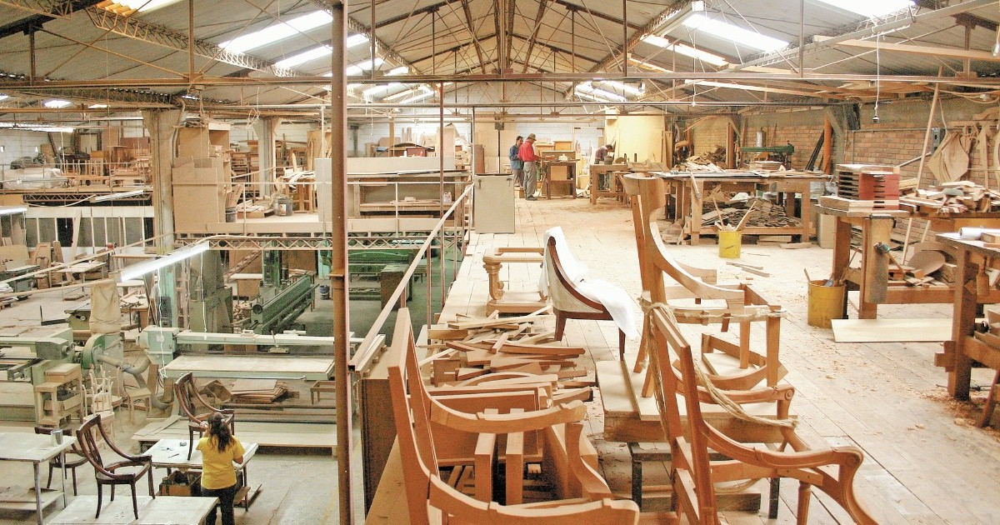

HERMANOS JOTA
Herencia e innovación, hechas para vivir
Hermanos Jota nace del redescubrimiento de un arte: crear muebles que no solo cumplen una función, sino que también forman parte de nuestra vida.
Nuestra propuesta encuentra un punto de encuentro entre la herencia de la artesanía y una mirada contemporánea, donde cada pieza busca honrar el pasado mientras abraza el futuro.

NUESTRA FILOSOFÍA
Cada pieza cuenta una historia
La calidez y la nostalgia forman parte de la primera impresión de Hermanos Jota. Pero detrás de cada pieza hay mucho más: materiales cuidadosamente seleccionados, principios de diseño atemporal y una historia de artesanía.
Para nosotros, un mueble no es solamente un objeto. Es una pieza que puede acompañar los rituales cotidianos, envejecer con gracia y adquirir carácter con el paso del tiempo.
SUSTENTABILIDAD Y MATERIALES
Diseñar pensando en el futuro
Nuestro compromiso con el medio ambiente y las futuras generaciones guía cada decisión de nuestro proceso creativo y productivo.
Trabajamos con madera certificada FSC de bosques responsables argentinos y priorizamos maderas nativas como algarrobo, quebracho y caldén.
También utilizamos acabados y adhesivos de bajo COV y priorizamos proveedores locales.
HERENCIA VIVA
Muebles para durar, cuidar y volver a vivir
Nuestro compromiso con la longevidad se materializa en el programa Herencia Viva, pensado para extender la vida de nuestras piezas y preservar su historia.
- 10 años de garantía en estructura.
- 5 años de garantía en acabados.
- Servicio de restauración para recuperar y renovar piezas antiguas.
- Taller de cuidados y capacitación gratuita para clientes.
- Recompra garantizada de hasta el 40% del valor en piezas bien cuidadas.
- Certificado de trazabilidad del origen de los materiales utilizados.